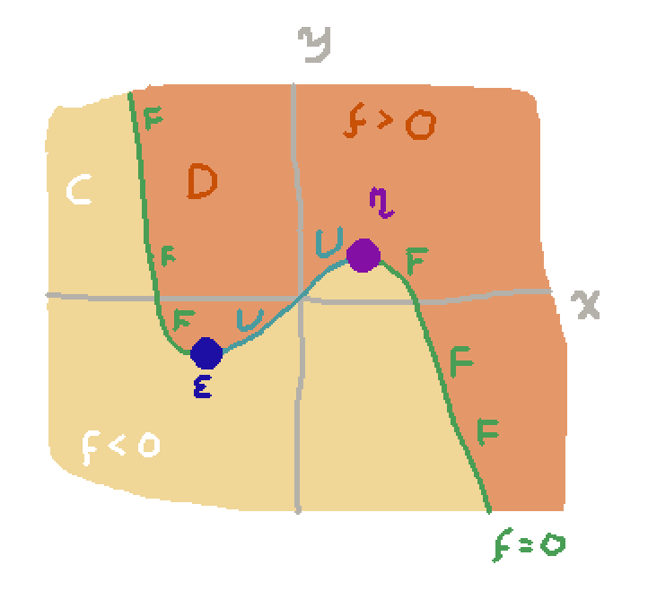

I want to articulate a way in which it
almost1 seems possible to
interpret almost2 any
multivariate polynomial function $f:\R^n \to \R$ as a
$n$-dimensional cell in an $\omega$-category. In a single
sentence, the crux of the interpretation is:
In what follows we'll assume all functions mentioned are polynomials
unless specified otherwise.
Example
Let $f : \R^2 \to \R$ be
\[f(x,y) = x^3 + y - 3x\]
We can graph it and interpret it as a string diagram like so:

The region where the function $f$ is negative is considered
an object $C$ of the $\omega$-category. The region where $f$ is
positive is called the object $D$. The points where $f$ is zero,
but $f_x$, the $x$-derivative of $f$, is positive, form two curves labelled
$F$ in the diagram: we interpret these as a morphism $F : C \to D$.
Places where $f = 0$ and $f_x < 0$ we interpret as a morphism $U : D \to C$.
Finally, the points where $F$ and $U$ come together in the diagram
are viewed as 2-cells. At the point labelled as the
2-cell $\eta : \rid_{C} \to UF$, the function $f$ has the property that
$f = 0$ and $f_x = 0$, but $f_{xx} > 0$ and $f_y > 0$.
At the point labelled $\epsilon :FU \to \rid_{D}$, we have
$f = 0$ and $f_x = 0$, but $f_{xx} < 0$ and $f_y > 0$.
The intended interpretation of $f = x^3 + y - 3x$ is the composite 2-cell
\[ \epsilon_F \o F \eta : F \to F\]
familiar from the triangle identities of an adjunction.
Criticality
The crucial thing is to define which
points of the graph of $f$ count as 'exceptional', 'interesting',
'critical', i.e. where higher dimensional cells are happening.
There are various levels of criticality, one for each dimension.
For a point to be $k$-critical means that belongs to a $k$-cell in
the graph of $f$.
We first have to define an auxiliary function $D^k(f) : \R^n \to \R$, for
any $f(x_1, \ldots, x_n) : \R^n \to \R$ and integer $k$ such that $1 \le k \le n$.
We say:
We say a point $p\in \R^n$
is $k$-critical in $f$ if $D^{\ell}(f) = 0$ for all $\ell \in 1,\ldots, k$.
We say a point is exactly $k$-critical if it is $k$-critical and
not $(k+1)$-critical.
Checking Back With the Example
We can see that this definition lines up with what we were saying
in the example above. The morphisms are points that are
exactly 1-critical — the points where $D^1(f) = f = 0$, but where
\[D^2(f) = \left| {\partial D^1(f) \over \partial x_1 }\right| = f_x \ne 0 \]
Similarly, the 2-cells are the points that are exactly 2-critical —
where $f_x = 0$, but where
\[ D^3(f) = \left|
\begin{array}{cc}
{\partial \over\partial x_1} D^1(f) & {\partial \over\partial x_2}D^1(f) \\
{\partial \over\partial x_1} D^2(f) & {\partial \over\partial x_2}D^2(f) \\
\end{array}
\right| \]
\[= \left|
\begin{array}{cc}
{\partial \over\partial x} f & {\partial \over\partial y}f \\
{\partial \over\partial x} f_x & {\partial \over\partial y}f_x \\
\end{array}
\right|
= \left|
\begin{array}{cc}
f_x & f_y \\
f_{xx} & f_{xy} \\
\end{array}
\right|
= \left|
\begin{array}{cc}
0 & f_y \\
f_{xx} & f_{xy} \\
\end{array}
\right|
= -f_{xx}f_y \ne 0
\]
Cells of the Putative $\omega$-Category
An $n$-cell is a function $f:\R^n \to \R$ that has no $(n+1)$-critical
points.
An $n$-cell is trivial if doesn't have any $n$-critical points.
We expect that trivial cells act like equivalences: the domain
and codomain of a trivial cell can be identified.
However, we haven't even defined what the domain and codomain of cells are!
We'd like to say something like: the domain of a morphism
$f : \R \to \R$ is
$f(-\infty)$ and the codomain of $f$ is $f(\infty)$. This isn't
precise, but since we said that functions that don't change sign
are trivial, we identify all positive 0-cells together, (calling
them collectively $C$ in the example above) and all negative
0-cells together (calling them $D$ in the example above).
Therefore it is more or less sensible to ask for $f(\infty)$ as
being either $C$ or $D$ according to
the sign $f$ asympotically reaches if you make its argument
arbitrarily large.
Questions
But obviously this is no good as a definition of a category if we can't
compose cells.
Is there a nice way to define composition?
What is a complete classification of the set of $n$-cells up
to trivial $(n+1)$-cell equivalence?